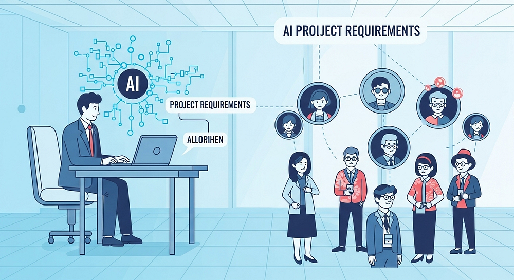

partnership - partner with us - proposal packages
proposal packages
"SISTAR Proposal Packages — Turnkey B2B volume deals, zero-inventory franchiseship models (S1–S6), and multilateral Qubit Bank offsetting alliances built for immediate mutual profit."
▫️ 20-Track B2B Proposal Packages & Strategic Partnership Tracks
Every partnership inside the Signal Star Universe is structured for rapid commercial velocity: Strategy → List Targets → Proposal Packages → Proposal / Deal → Mgnt.AI:
- • Container Volume Deals & First-3-Shipments 50% Promo: Tailored offer sheets for national importers, regional wholesalers, and clinic chains—featuring 50% introductory volume discounts, K-SURE BNPL trade financing, and localized GMP sachet repacking.
- • Turnkey Franchiseship Models (S1–S6) & Zero-Cost Double-Income Campaign: Ready-to-deploy business packages across S1: Salon (IRUKA), S2: On/Off Shops (Mint-Colored Shop), S3: Veterinary Clinic, S4: Pet Hotel, S5: Academy, and S6: Membership Clubs.
- • Multilateral Asset Offsetting & Direct Executive Contacts: Enables manufacturers, warehouse operators, and distributors to swap physical stock, warehouse space, and AI digital transformation services without cash bottlenecks.


▫️ Detailed Archive: SISTAR Company Proposal Packages
Comprehensive operational records, strategic frameworks, and source specifications preserved from SISTAR Company Proposal Packages:
- • SISTAR Company: The Future of Project-Based Work
- • An agile ecosystem connecting elite talent with business needs through a contract-based, remote framework.
- • The Modern Work Problem
- • Finding, vetting, and managing skilled project teams is slow, costly, and inflexible. Traditional hiring models struggle to keep pace with the rapidly evolving demands of modern projects.
- • Skilled professionals desire flexibility, engaging project work, and continuous learning opportunities, seeking liberation from the constraints of single employers.
- • This creates a significant disconnect between what businesses need for agile project execution and what independent, skilled workers truly seek.
- • Our Solution: The SISTAR Ecosystem
- • A curated platform that manages the entire lifecycle of project-based work. We are not a freelance marketplace; we are a managed service for deploying agile, remote teams.
- • Every engagement is secured by a clear, legally-binding contract.
- • Leveraging a global talent pool and offering maximum flexibility.
- • Focus on defined deliverables within a managed workspace.
- • We provide the structure to ensure projects are delivered on time and on budget.
- • Build Your Career, Your Way
- • Engage in multiple, high-impact projects simultaneously, maximizing your earning potential and skill development.
- • Participate as a Project Leader, Team Member, HQ Function, or Area Manager.
- • Monthly payments based on pre-agreed project budgets.
- • Time & Financial Efficiency
- • Earn more in less time by stacking projects. No time wasted on commuting or administrative overhead.
- • Gain practical experience ("Learning by Doing") in cutting-edge fields.
- • Access to projects and training focused on Artificial Intelligence, a high-demand skill.
- • For Business Partners: Agile Talent on Demand
- • Access vetted, pre-formed project teams ready to execute on your specific goals without the overhead of traditional hiring.
- • Reduce recruitment, onboarding, and benefits costs significantly.
- • Deploy a full project team in days, not months.
- • Tap into our curated network of specialists, particularly in AI .
- • Capitalizing on the Future of Work
- • A Trillion Dollar Market
- • The global gig economy is projected to reach nearly $900 billion by 2028, with SISTAR positioned in the high-value segment of this expanding market.
- • We take a percentage fee from the total project budget agreed upon by the Business Partner, ensuring clear and predictable income streams.
- • Our technology handles matching, contracting, and payments, allowing for seamless global expansion with minimal overhead and maximum efficiency.
- • Our AI focus creates a strong competitive moat in a market with proven demand, positioning us for significant future growth.
- • Our special platform and dedicated staff manage every step of your project. We make sure everything is clear, efficient, and successfully delivered, from start to finish.
- • Business partners explain what their project needs, including specific tasks and desired AI features. Our AI system then quickly suggests the best pre-checked team from our global talent pool, matching skills, experience, and work style.
- • Our dedicated staff helps finalize team choices and introduces everyone. They work closely with both you and the team to set up clear communication, track goals, and make sure everyone shares the same vision.
- • We quickly create clear, legally binding contracts that cover all the details, including project goals, timelines, and payment steps. Once signed digitally, the project usually starts in days, not weeks.
- • Teams work together using SISTAR's integrated tools for tracking progress and secure communication. Our staff continuously watches over projects, making sure they stay on track with scope, deadlines, and budget. We provide regular updates to business partners.
- • Competitive Landscape & Our Edge
- • Focuses on connecting businesses with individual, highly vetted freelance talent for specific projects.
- • Specializes in providing pre-assembled development teams to execute specific tech projects.
- • Offers a holistic ecosystem for project-based work, with defined roles, managed teams, and an integrated learning pathway.
- • Our Technology & Vision
- • Our proprietary platform serves as the central hub for project management, task allocation, communication, contract management, and payment processing.
- • With seamless Google Workspace integration, we're building the world's leading platform for AI-focused, project-based work , creating a global community of top-tier talent and innovative businesses.
- • Join the Future of Work
- • Ready to take control of your career? Apply to become a Participant today.
- • Need an agile team to bring your vision to life? Post your project with us.
- • Interested in backing a leader in the new economy? Let's connect at investors@sistarCompany.com

▫️ Detailed Archive: Contacts
Comprehensive operational records, strategic frameworks, and source specifications preserved from Contacts:
- • Proposal for Partnership: [SISTAR Proposal] for Partnership
- • Placing Orders: SISTAR Proposal for Purchasing
- • PT. SISTAR Indonesia I a SISTAR Company
- • Ms. Citra _eMail: citrarizkiya@gmail.com, W.A.: 081802230666Mr.
- • Mr. DennyKu _eMail denniiku@sistarcompany.com, W.A.: 081394411002
- • Jl. Setrasari Kulon 1, No. 3, BanDung, WestJava, Indonesia
- • #203, Adelheim, JungNang, Seoul, Korea